| 日付 | 2023年2月18日（土） - 2023年2月19日（日） |
|---|---|
| メンバー | 家族（妻、長女・11歳、長男・9歳） |
| アクセス | 車 |
今年2回目のスキー。2回目は行き慣れた長野県に向かう。
初日は初訪問のブランシュたかやま。
晴れ率の高い地域なのだが、残念がら天気予報はあまり良くない中での出発だ。
1日目
この時期の中央道は以前はガラガラだったが、
今回は渋滞まではいかないが、交通量が多かった。
4時間かかってブランシュたかやまのスキー場に到着する。
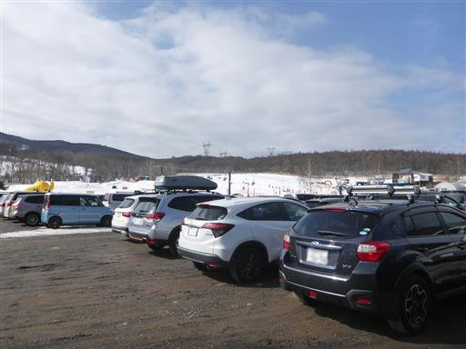
スキー場からは蓼科山が見える。

遠くに白く輝くピークが見える。三峰山だろうか？
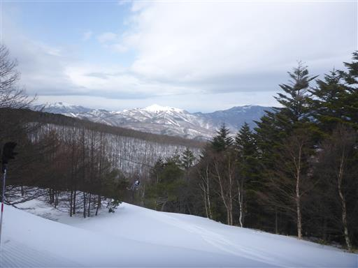
一本滑った後、スキー場最高地点の展望台に移動。
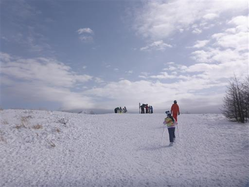
目の前に車山のレーダードームが見える。
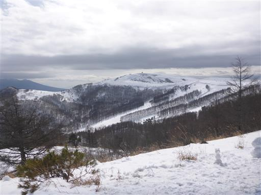
こちらは八ヶ岳方面。辛うじて蓼科山が見えているが、残念ながら南八ヶ岳は見えない。
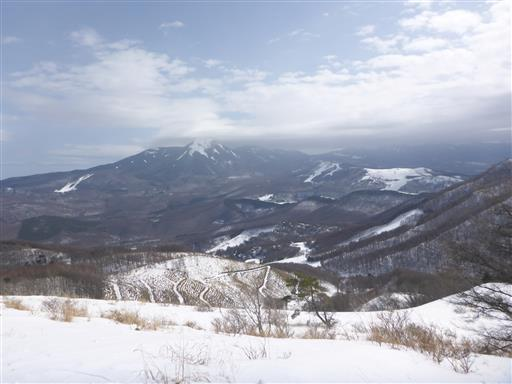
スキー地蔵。ここで記念撮影。
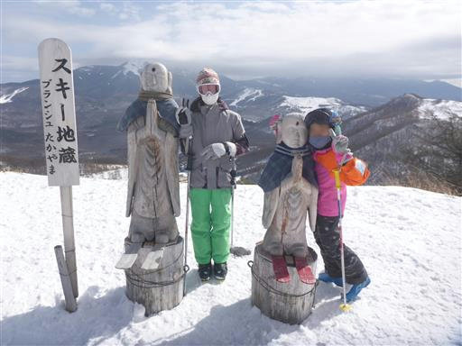
混雑はしていないが、先月訪れた上越国際よりは賑わっている。
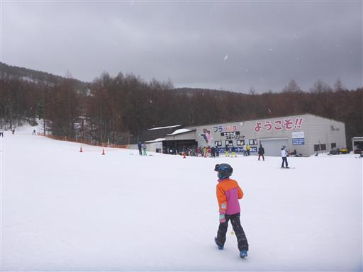
レストハウスにはスキー板が大量に立てかけられている。
このスキー場はスノーボード禁止のため、スノーボードは見られない。
客層も若者が少なくファミリー層が多い。
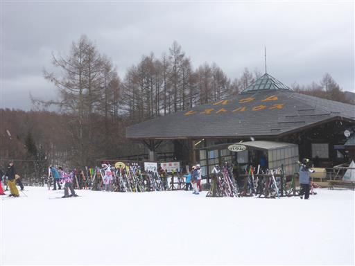
15時半まで滑ったら宿に移動。今回は4年前にお世話になったラ・フォンテーヌ・アルジャンテ。
今回も温かく迎えていただけた。
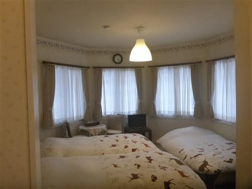
2日目
本日は残念ながら雨予報。天候が悪いうえに、気温も高い。
この界隈では一番標高の高いピラタス蓼科スキーリゾートに来てみる。
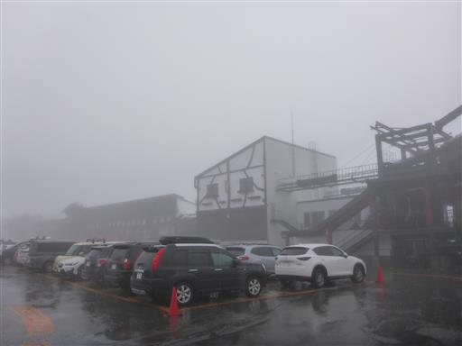
しかし、雪にはなっておらず大雨だ。
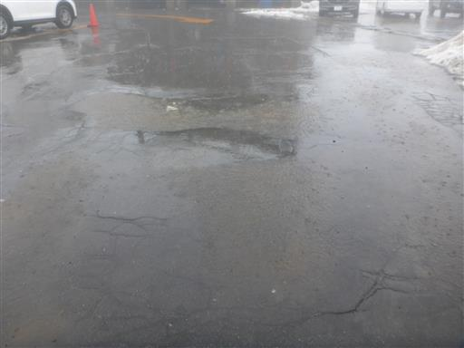
スキーをするかどうか迷ったが、冬の雨の長野で他にやりたいことも見つからず、
仕方なくスキーをすることにする。前回ほどの混雑ではないが、
他にもそこそこスキーヤー、スノーボーダー、登山者がいる。

ゴンドラからの景色。完全に雲の中だ。
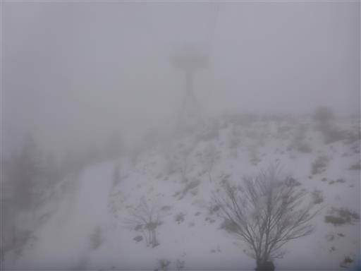
坪庭に到着。ここまで上っても雪にはならず雨だ。
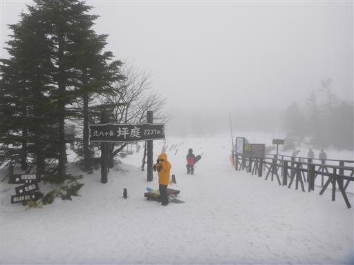
滑走。雨で雪面が悪いだけでなく、ほぼ前が見えない。
ゴーグルを付けたら全く前が見えず、ゴーグルを外すと雨が痛い。
そして、雨でスキーウェアは浸水し、中の服までかなり濡れてしまう。
やはり雨の中のスキーはかなり過酷だった。
今回のスキーは天候に恵まれず、ちょっと残念だった。
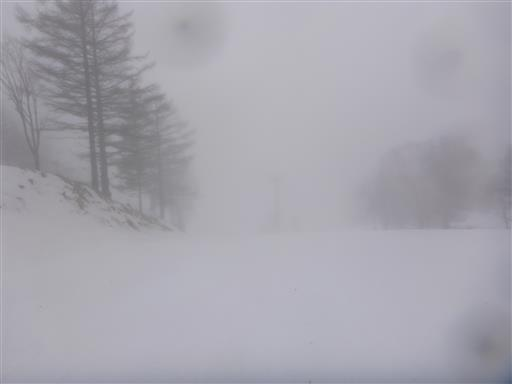